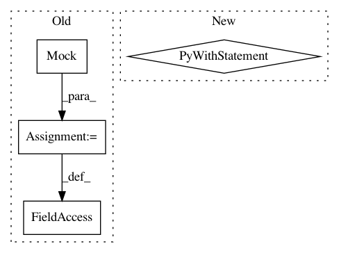

0a159f32075b2e8a9c0875ff54a68b7ed457bd9a,deepvariant/make_examples_test.py,RegionProcessorTest,test_label_variant_raises_for_non_confident_variant,#RegionProcessorTest#,1130
Before Change
def test_label_variant_raises_for_non_confident_variant(self):
variant = test_utils.make_variant(start=10, alleles=["A", "C"], gt=[0, 1])
self.processor.labeler = mock.Mock()
self.processor.labeler.match = mock.Mock(return_value=[False, variant])
example = tf_utils.make_example(variant, ["C"], "foo", self.default_shape,
self.default_format)
self.assertFalse(self.processor.label_variant(example, variant))
After Change
variant=test_utils.make_variant(start=10, alleles=["A", "C"]),
truth_variant=test_utils.make_variant(start=10, alleles=["A", "C"]))
example = self._example_for_variant(label.variant)
with self.assertRaisesRegexp(
ValueError, "Cannot add a non-confident label to an example"):
self.processor.add_label_to_example(example, label)
def _example_for_variant(self, variant):
return tf_utils.make_example(variant, list(variant.alternate_bases), "foo",
self.default_shape, self.default_format)
In pattern: SUPERPATTERN
Frequency: 3
Non-data size: 4
Instances
Project Name: google/deepvariant
Commit Name: 0a159f32075b2e8a9c0875ff54a68b7ed457bd9a
Time: 2018-02-27
Author: mdepristo@google.com
File Name: deepvariant/make_examples_test.py
Class Name: RegionProcessorTest
Method Name: test_label_variant_raises_for_non_confident_variant
Project Name: aleju/imgaug
Commit Name: ff1bfcb0499605f2cedf9b2aa53dafff2cd4a8c0
Time: 2019-09-07
Author: kontakt@ajung.name
File Name: test/augmenters/test_contrast.py
Class Name: TestCLAHE
Method Name: _test_single_image_3d_rgb_to_x
Project Name: pantsbuild/pants
Commit Name: d4e95750f94b046d40e252ff8a4aada43000f68e
Time: 2016-02-02
Author: kwilson@twopensource.com
File Name: tests/python/pants_test/python/test_interpreter_cache.py
Class Name: TestInterpreterCache
Method Name: _do_test